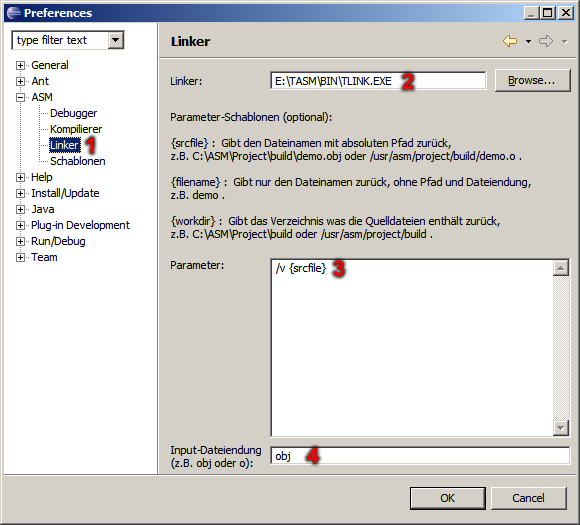
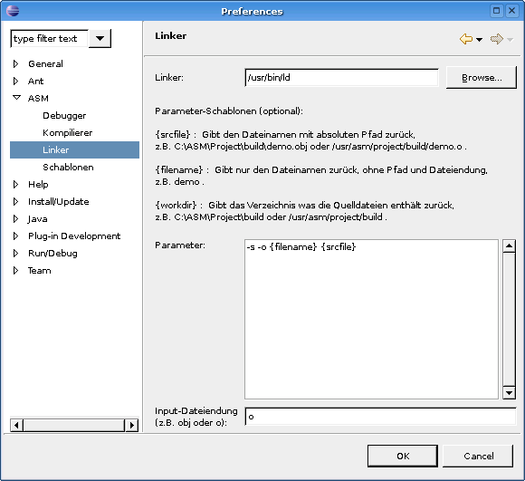

ASM Plug-In - Linker-Preferences
In this dialog the linkere and its parameters set for the object files.


Selection for linker preferences.
Path to linker executable.
Parameters for linker
Fileextension for input object files